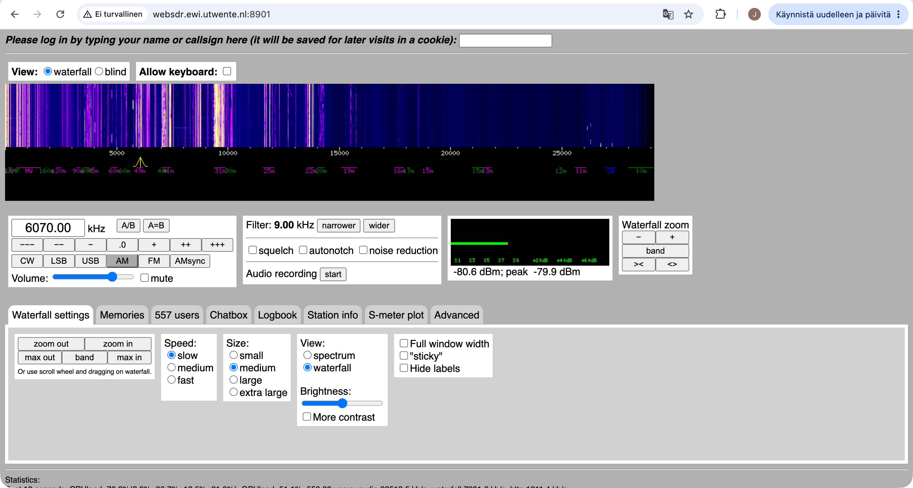

Googlasin WebSDR ja klikkasin ensimmäistä tulosta.
Valitsin ensimmäisen vastaanottimen, joka oli WebSDR at the University of Twente, Enschede, NL.
Valitsin amplitudimodulaation (AM) ja ryhdyin haravoimaan taajuksia. Taajudella 6070.0 kHz alkoi kuulua musiikkia, joskin lähetys oli melkoista rätinää ja signaali katkeili.
